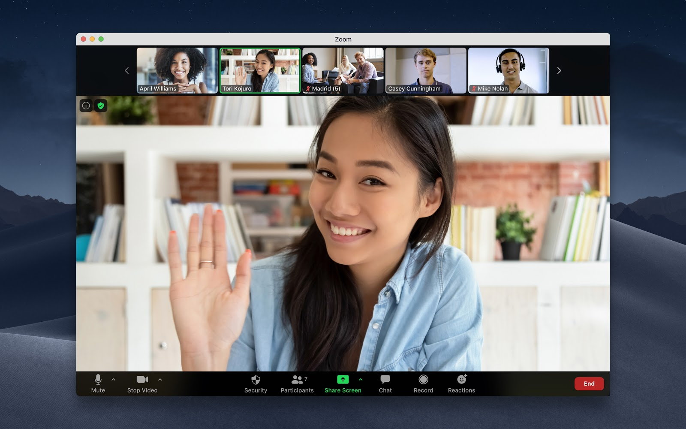

Tips and Tricks for Teachers!

Necessary Equipment
- A desktop computer or laptop.
- For a Windows computer, you need at least Windows 7, with an Intel Pentium 4 processor or better. (The Intel
Pentium 4 was released in 2001 for reference)
- For a Macbook, you will need OS X El Capitan 10.11. (OS X EL Capitan 10.11 is installed on most Macbooks
made after 2015.)
- A reliable internet connection.
- A webcam and microphone for hosting Zoom meetings, and recording video lectures.
Optional Equipment
- A scanner would allow you to scan and upload documents for students. This way you do not have to find them online.
- If you anticipate teaching online for an extended period of time, consider getting two monitors for your computer. This can be very convenient!
Digital Literacy
Necessary Skills
- Be able to browse the internet.
- Read and write emails.
- Create and modify documents in Microsoft Word, Microsoft PowerPoint, or other software for sharing information.
- Host a Zoom meeting, and how to prevent random people from joining.
- How to post lessons and assignments online for students to see.
Social Interaction
- Online schooling limits how often you can interact with students.
- Try your best to negate this by sharing your availability with students. Stay around for 10 minutes after a Zoom meeting to answer questions. Constantly check your email, and try to respond quickly.
- Offer office hours outside of your normal classtime, so students can come to your during a period of time you set aside to help.
- Make sure to reassure students, as many of them are adapting to a new environment, just as you are.
Home Environment
- Try to create an environment similar to school when you work.
- Make sure your work space is free of distractions.
- Make sure your work space is somewher quiet, as you will be recording videos or video chatting frequently.
- Dress for the job, your appearance still matters even if you're at home!
Asynchronous Learning
- Asynchronous learning allows a lot of flexibility, but also takes a lot of responsibility from students.
- Make sure to give your students a similar amount of work each week, so they can expect how might time they're going to need to set aside.
- Send out reminders of assignments, as sometimes students miss writing something on their calendars or in their emails.
- Avoid making video lectures too long, or at least break them up into smaller parts so students can do some now, and the rest later.
- If you are holding an online discussion consider having a facilitator to help guide the conversation and keep track of who gets to talk next.
- Offer extra materials outside of what is required for normal class so students can study more if they desire. Sometime a different approach to a topic can help a student understand it more.
- If a certain assignment doesn't seem to translate well to online classes, consider changing it to work with an online format. Posters can be created online with websites like Canva, Google Slides, and more. Presentations can be done with software like VoiceThread.
- Mistakes are going to happen, so try to be lenient!
To read my research paper, scan here!